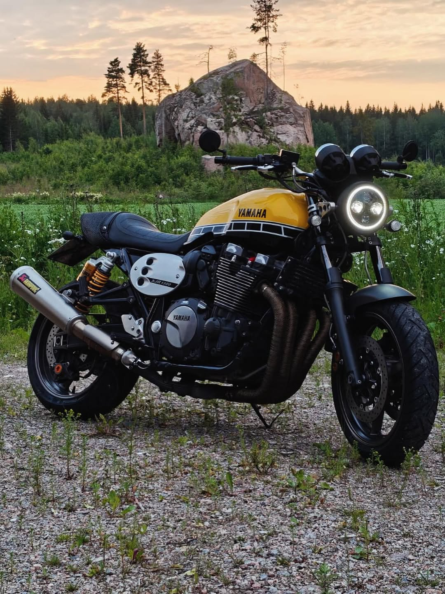
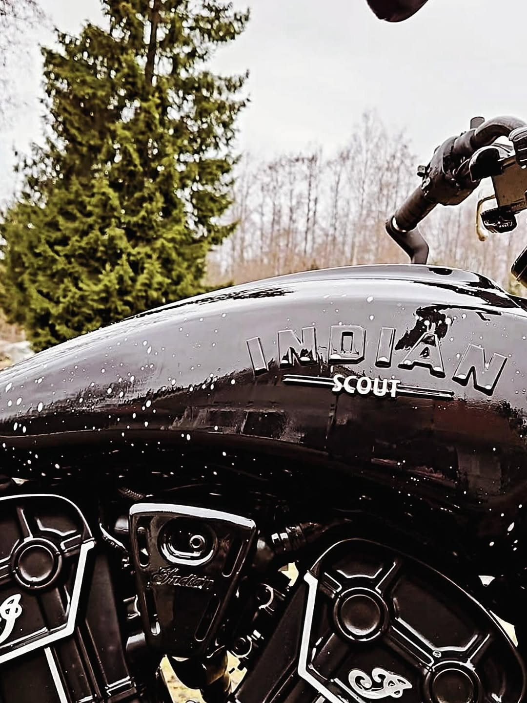
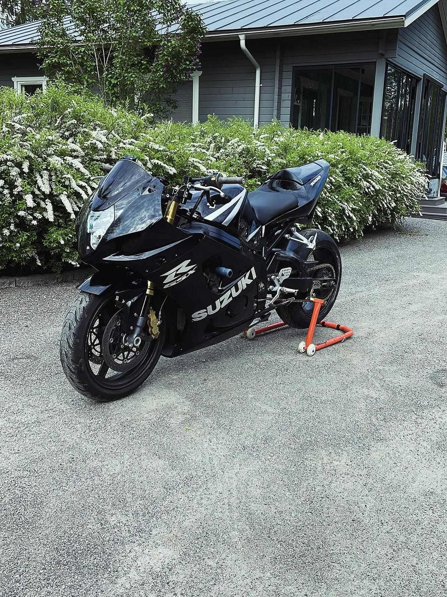
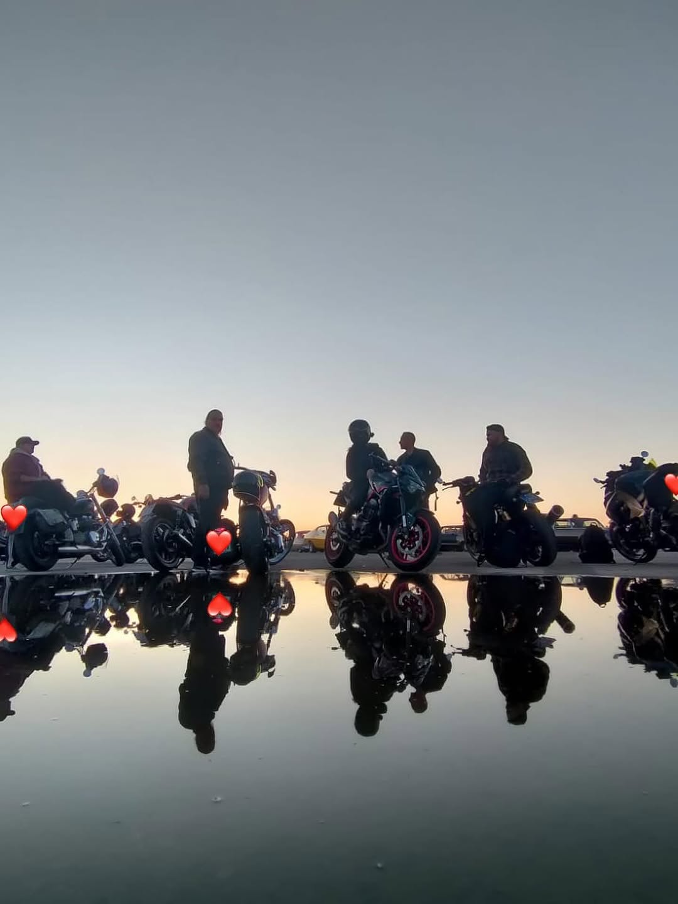
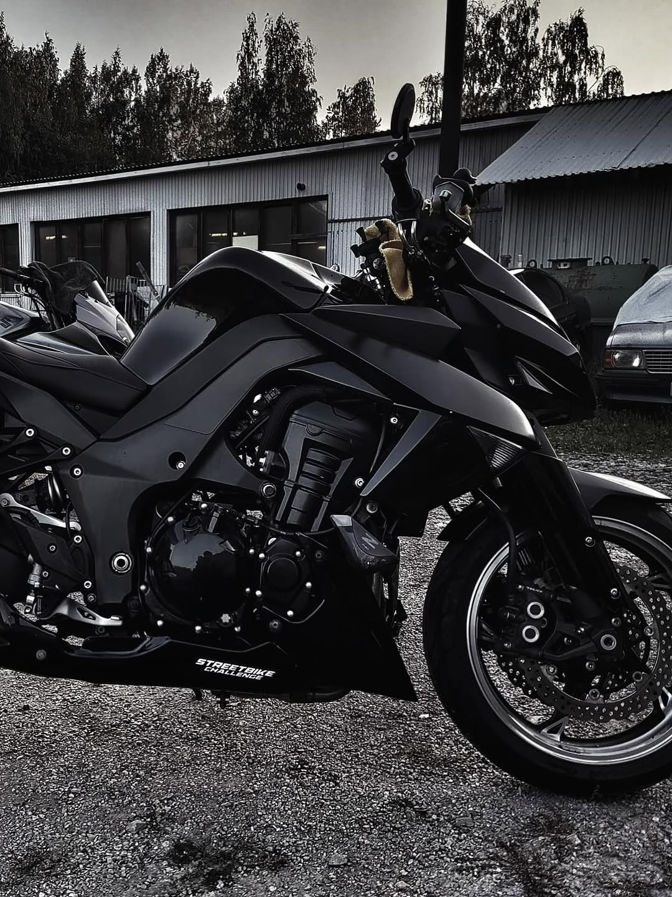
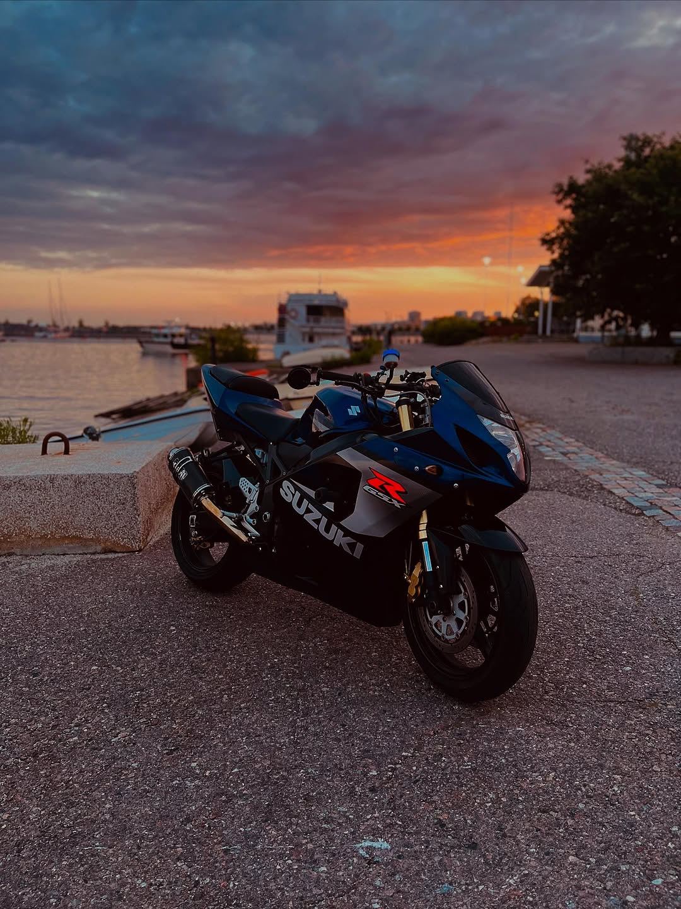
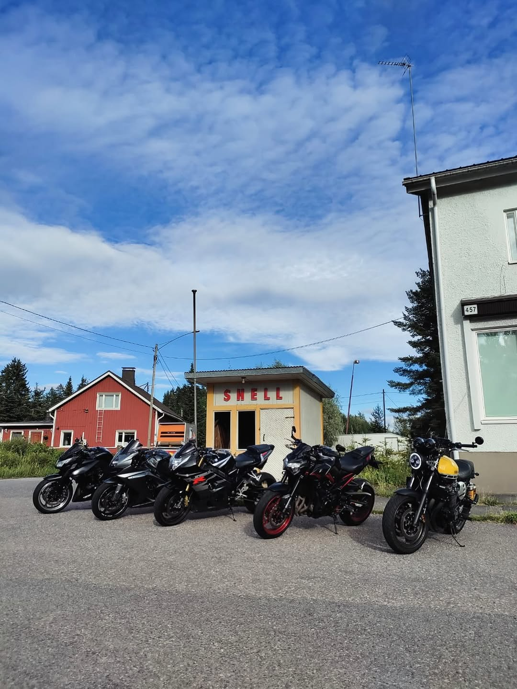

Yhdistyksen tarkoituksena on edistää moottoripyöräharrastusta tarjoamalla jäsenille mahdollisuuksia kehittää ajotaitojaan, syventää teknistä osaamistaan, sekä jakaa tietoa ja kokemuksia moottoripyörien huollosta, korjauksesta ja rakentamisesta.
Yhdistys pyrkii edistämään turvallista ja vastuullista moottoripyöräilyä, sekä yhteisöllisyyttä harrastajien keskuudessa.
Tarkoituksensa toteuttamiseksi yhdistys:
Toimintansa tukemiseksi yhdistys voi, hankittuaan tarvittaessa asianomaisen luvan:
Yhdistykseen varsinaiseksi jäseneksi voidaan hyväksyä henkilö, joka hyväksyy yhdistyksen tarkoituksen. Kannattavaksi jäseneksi voidaan hyväksyä yksityinen henkilö tai oikeuskelpoinen yhteisö, joka haluaa tukea yhdistyksen tarkoitusta ja toimintaa.
Varsinaiset jäsenet ja kannattavat jäsenet hyväksyy hakemuksesta yhdistyksen hallitus. Kunniapuheenjohtajaksi tai kunniajäseneksi voidaan hallituksen esityksestä yhdistyksen kokouksessa kutsua henkilö, joka on huomattavasti edistänyt ja tukenut yhdistyksen toimintaa.
Varsinaisilta jäseniltä ja kannattavilta jäseniltä perittävän liittymismaksun ja vuotuisen jäsenmaksun suuruudesta erikseen kummallekin jäsenryhmälle päättää vuosikokous. Kunniapuheenjohtaja ja kunniajäsenet eivät suorita jäsenmaksuja.
Yhdistyksen asioita hoitaa hallitus, johon kuuluu vuosikokouksessa valitut puheenjohtaja ja 2 - 5 muuta varsinaista jäsentä sekä 0 - 5 varajäsentä.
Hallituksen toimikausi on valintakokousten välinen aika.
Hallitus valitsee keskuudestaan varapuheenjohtajan sekä ottaa keskuudestaan tai ulkopuoleltaan sihteerin, rahastonhoitajan ja muut tarvittavat toimihenkilöt.
Hallitus kokoontuu puheenjohtajan tai hänen estyneenä ollessaan varapuheenjohtajan kutsusta, kun he katsovat siihen olevan aihetta tai kun vähintään puolet hallituksen jäsenistä sitä vaatii.Hallitus on päätösvaltainen, kun vähintään puolet sen jäsenistä, puheenjohtaja tai varapuheenjohtaja mukaanluettuna on läsnä.
Äänestykset ratkaistaan ehdottomalla ääntenenemmistöllä. Äänten mennessä tasan ratkaisee puheenjohtajan ääni, vaaleissa kuitenkin arpa.
Yhdistyksen kokoukseen voidaan osallistua hallituksen tai yhdistyksen kokouksen niin päättäessä myös postitse taikka tietoliikenneyhteyden tai muun teknisen apuvälineen avulla kokouksen aikana tai ennen kokousta.
Yhdistyksen kokous hyväksyy äänestys- ja vaalijärjestyksen.
Yhdistyksen vuosikokous pidetään vuosittain hallituksen määräämänä päivänä helmi-toukokuussa.
Yhdistyksen kokouksissa on jokaisella varsinaisella jäsenellä, kunniapuheenjohtajalla ja kunniajäsenellä yksi ääni. Kannattavalla jäsenellä on kokouksessa läsnäolo- ja puheoikeus.
Yhdistyksen kokouksen päätökseksi tulee, ellei säännöissä ole toisin määrätty, se mielipide, jota on kannattanut yli puolet annetuista äänistä. Äänten mennessä tasan ratkaisee kokouksen puheenjohtajan ääni, vaaleissa kuitenkin arpa.
Hallituksen on kutsuttava yhdistyksen kokoukset koolle vähintään 14 vuorokautta ennen kokousta.
Kokouskutsu on lähetettävä jäsenille:
Yhdistyksen vuosikokouksessa käsitellään seuraavat asiat:
Mikäli yhdistyksen jäsen haluaa saada jonkin asian yhdistyksen vuosikokouksen käsiteltäväksi, on hänen ilmoitettava siitä kirjallisesti hallitukselle niin hyvissä ajoin, että asia voidaan sisällyttää kokouskutsuun.
Päätös sääntöjen muuttamisesta ja yhdistyksen purkamisesta on tehtävä yhdistyksen kokouksessa vähintään kolmen neljäsosan (3/4) enemmistöllä annetuista äänistä. Kokouskutsussa on mainittava sääntöjen muuttamisesta tai yhdistyksen purkamisesta.
Yhdistyksen purkautuessa käytetään yhdistyksen varat yhdistyksen tarkoituksen edistämiseen purkamisesta päättävän kokouksen määräämällä tavalla. Yhdistyksen tullessa lakkautetuksi käytetään sen varat samaan tarkoitukseen.
Ajoneuvoharrastajien yhdistys niille, jotka rakentavat ja ajavat erottuakseen - eivät sulautuakseen joukkoon.
@oddoneoutry OddOneOut oli tänään isolla porukalla MP-messuilla!🔥Käytiin myös vähän kyselee jengiltä mitä ne odottaa ens kaudelta😎🏍️#oddoneoutry #motorcycles #mpmessut2026 @GP Garage Oy
♬ alkuperäinen ääni - OddOneOut ry
OddOneOut ry on ajoneuvoharrastajien yhteisö, joka jakaa intohimon erikoisiin harrasteajoneuvoihin, omiin rakennelmiin ja avoimeen tiehen. Yhdistys perustettiin vuonna 2025 kokoamaan yhteen tekijöitä, jotka uskaltavat olla erilaisia. Järjestämme kokoontumisia, ajo- ja cruising-tapahtumia sekä yhteisiä reissuja ympäri vuoden.
OddOneOut sai alkunsa jo vuonna 2023, kun pieni kaveriporukka kaipasi omaa ajoseuraa. Kahden vuoden aikana porukka kasvoi nopeasti, ja nykyisin mukana on jo yli 30 aktiivista harrastajaa. Virallisia jäseniä yhdistyksellä on 16, mutta laajempi tukijoukko ja ystäväpiiri tuo lisäväriä toimintaan.
Yhdistyksen kotipaikka on Mikkeli, mutta jäseniä ja kannattajia löytyy pk-seudulta aina Kuopioon asti. Olemme vierailleet porukalla MP-messuilla, B-illoissa ja Lahti-Vesivehmaan kiihdytysajoissa. Lisäksi järjestämme omia kokoontumisia, grilli-iltoja ja yhteisiä ajoreissuja, joissa tärkeintä on hyvä fiilis ja samanhenkinen seura.
Meille OddOneOut ry:ssä tärkeintä on yhdessä tekeminen ja se, että jokainen voi olla oma itsensä. Olitpa kiinnostunut rakentelusta, reissaamisesta tai vain nautit ajoneuvojen maailmasta, löydät joukostamme kavereita ja samanhenkistä seuraa.
Haluatko liittyä OddOneOut ry:n jäseneksi? Ota yhteyttä puheenjohtajaan tai varapuheenjohtajaan sähköpostitse, niin kerromme lisää liittymisestä ja jäseneduista.
Puheenjohtaja: Oskari Pekkola
Sähköposti: oskari.pekkola@oddoneoutcrew.org
Varapuheenjohtaja: Kalle Loikkanen
Sähköposti: kalle.loikkanen@oddoneoutcrew.org






